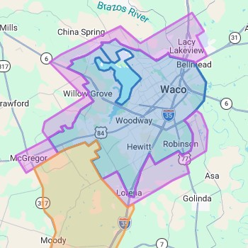
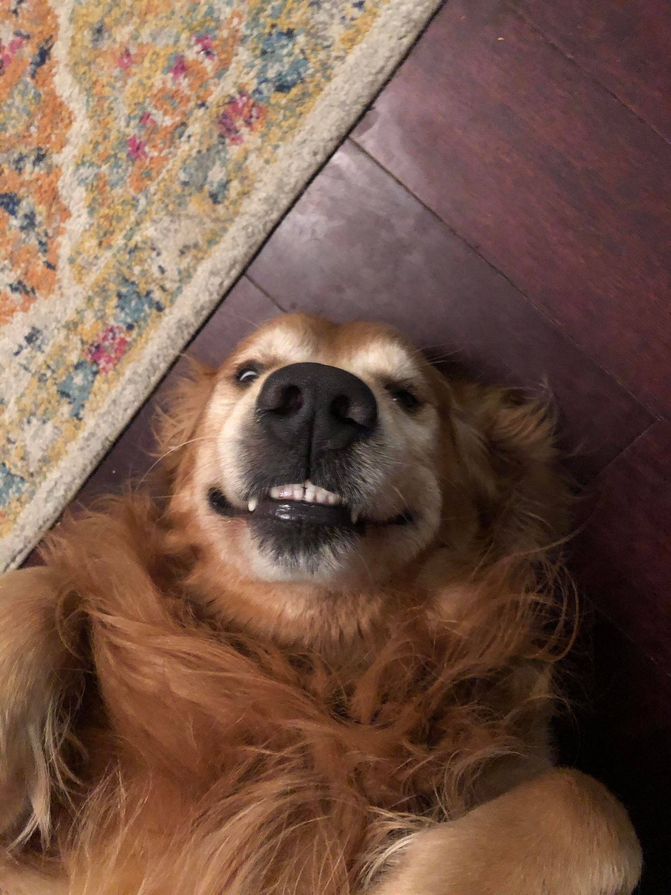
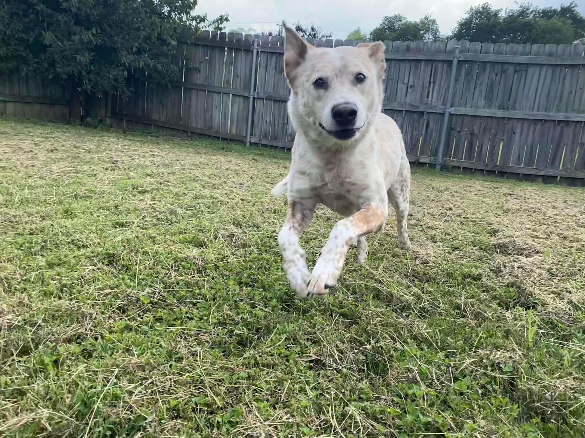
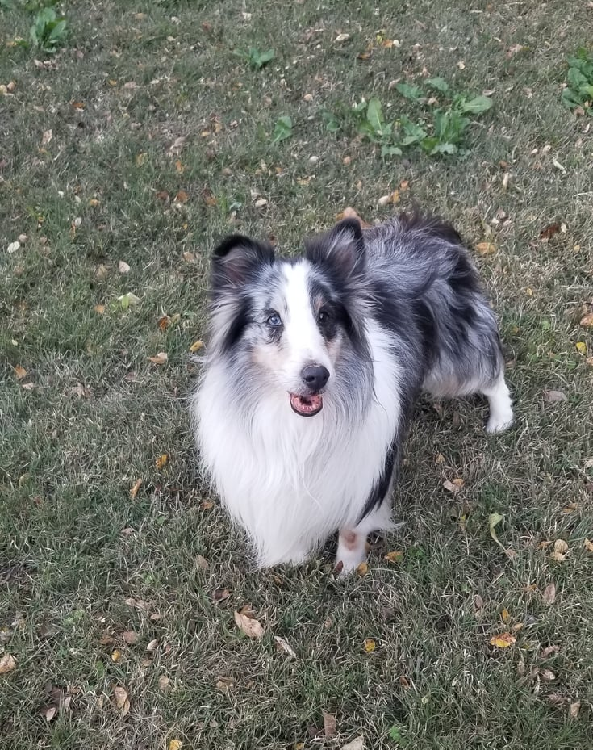
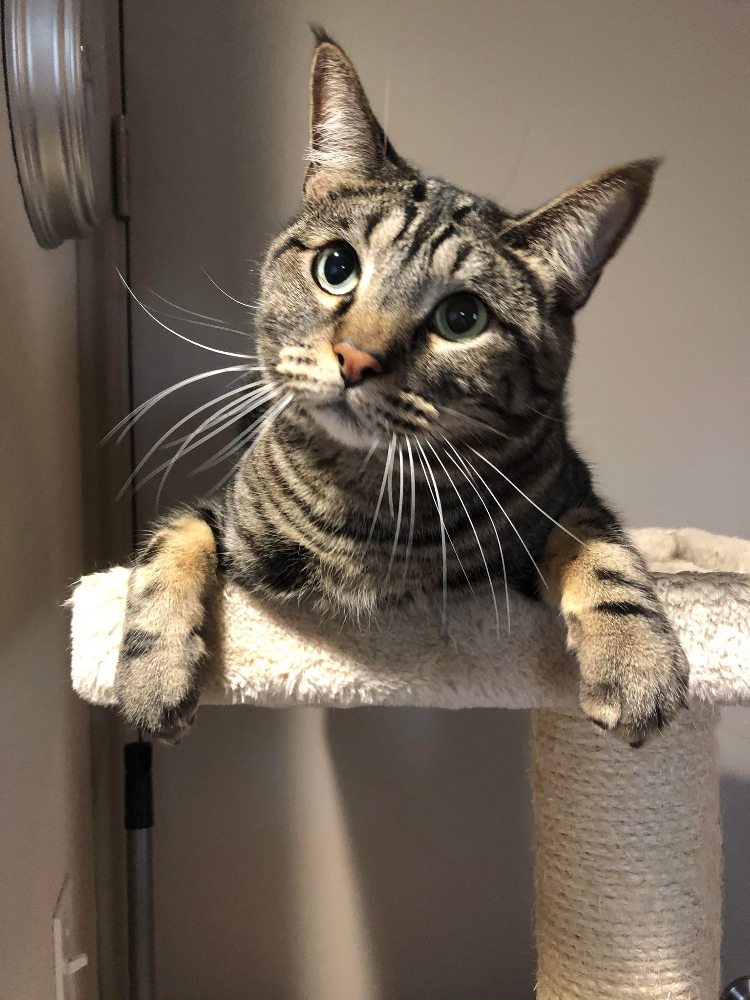
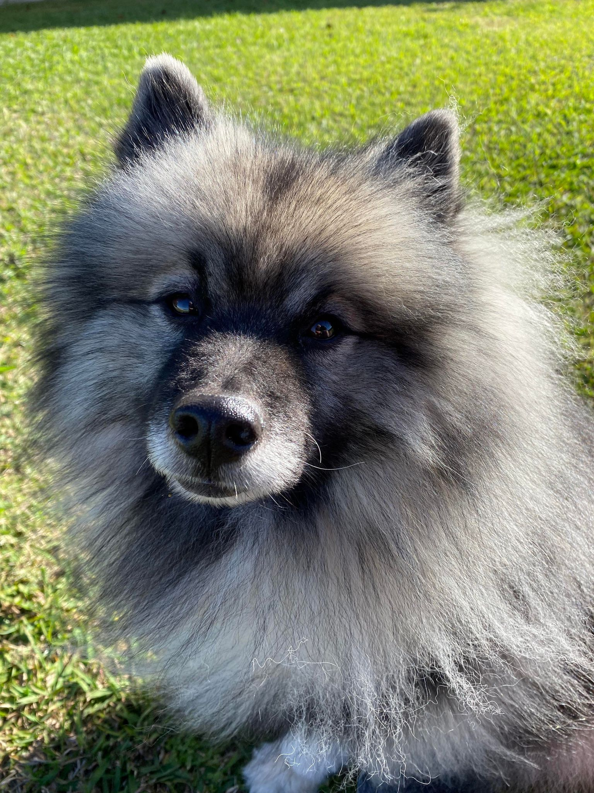
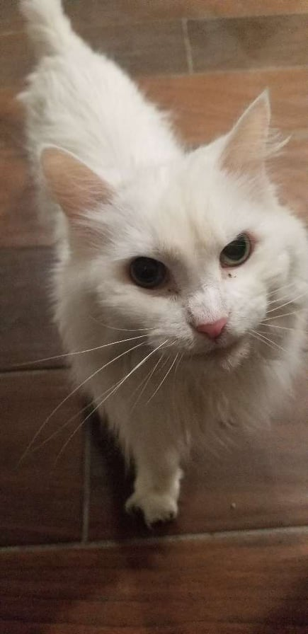
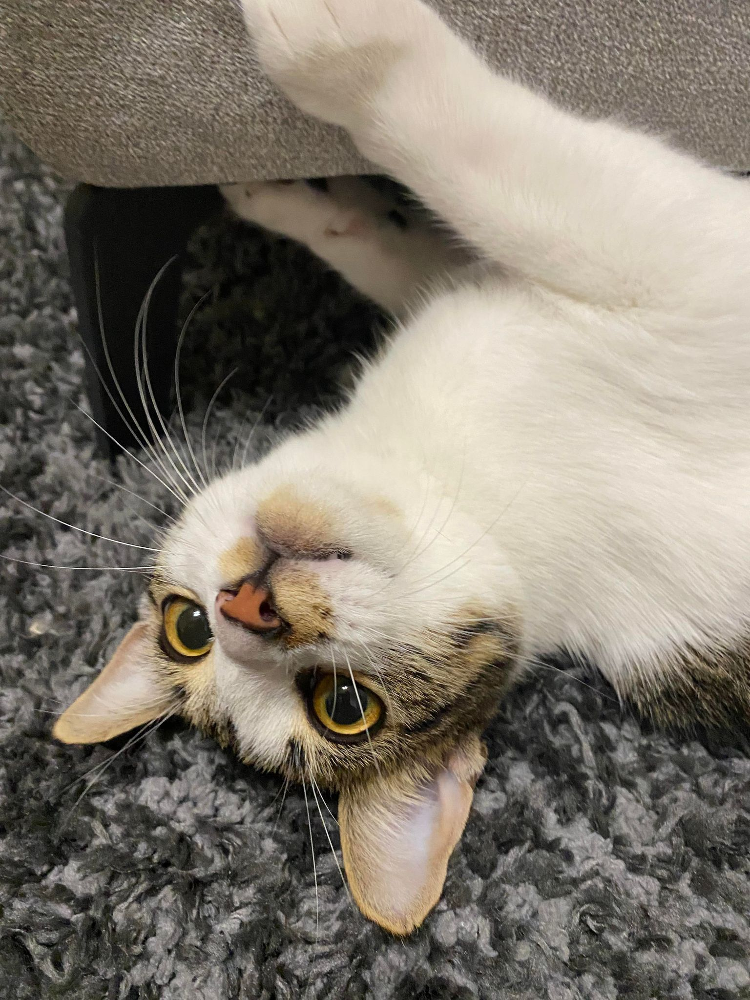
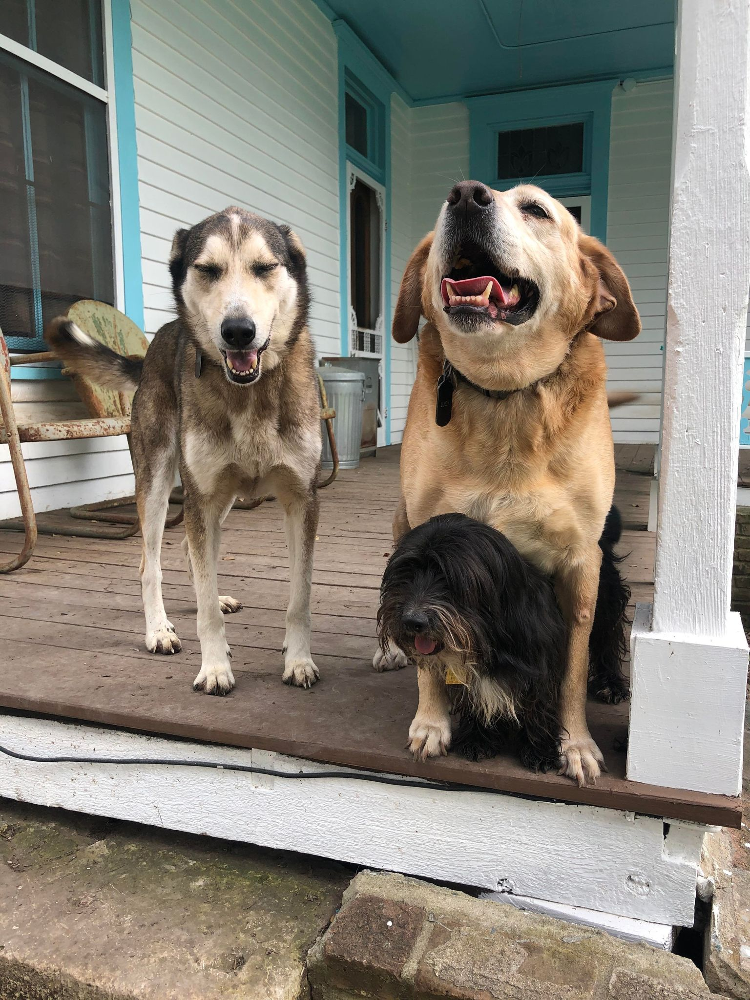

Pricing & Services
Transparent, simple pricing. No hidden fees. We charge based on time, not the number of pets.
Let us care for your pets the next time you're out of town. We'll visit your pets in your home up to 4 times a day. We offer care for a variety of pets, no matter how big or small. We'll help give your home a "lived-in" look by bringing in the mail, alternating lights and blinds — all at no extra charge.
Quick Visit - 15 Minutes
Great for shy, skittish, or low-maintenance cats and small animals. Also a quick potty break only for dogs.
Standard Visit - 30 Minutes
All the essentials: feeding, fresh water, dog walking (by request), potty breaks, litter box cleaning, medication, and lots of TLC.
Longer Visit - 45 Minutes
Everything in the standard visit plus an extra 15 minutes of playtime and TLC. Great for multiple pets!
Pet Care Calculator
Do you work long hours or have a hard time exercising your pup? We'll come to your home, leash up your furry friend, and take them for a walk around the neighborhood — ensuring they get a potty break, exercise, clean water, and a treat (optional).
Potty Break - 15 Minutes
For dogs who don't need too much exercise. No need to rush home on your lunch break — we've got you covered!
Dog Walking - 30 Minutes
A great neighborhood walk ensuring your pup gets their exercise, potty break, fresh water, and lots of love.
Dog Walking - 45 Minutes
More time, more exercise, more fun. Perfect for high-energy dogs who love longer outings.
Potty Break / Dog Walking Calculator
SINGLE PET DISCOUNT (10%) – For households with one pet. Receive 10% off your invoice.
DAILY DISCOUNT (5%) – For ongoing daily care. Clients booking 10+ visits per month receive 5% off.
CASH DISCOUNT (5%) – Pay in cash and receive 5% off your invoice.
ADDITIONAL 15 MINUTES – Need a little more time? Add an extra $12 per 15-minute blocks
MULTIPLE PETS – No additional charge for multiple pets. Pricing is based on time, not the number of pets.
5-Star Reviews
Our clients love us, and they aren't afraid to show it! Read over 150+ reviews of satisfied pet owners and see why The Purr-fect Paw is the highest-rated pet sitting company in Waco.

Serving Central Texas
We service the Waco, Woodway, Hewitt, Temple, Belton, and surrounding areas. Refer to the map to ensure you're in our service area. Not sure? Send us a message and we'll be glad to help.
*$1 per mile outside Blue Zone
The Purr-fect Paw Team
The Purr-fect Paw is a family-owned company that opened in 2011 in Waco, and has since become one of the highest-rated pet sitting and dog walking companies in Central Texas. Whether you're traveling on business, taking a vacation, or working late — we're here for you and your pets.








Frequently Asked Questions
Single Pet Discount – Only have 1 pet? Take 10% off your entire invoice!
Daily Discount – When scheduling 10+ visits in a single month, receive 5% off your invoice!
Cash Discount – We also offer a 5% discount when you pay in cash.
Let's Talk About Your Pets
Have questions? Ready to get started? We'd love to hear from you. Reach out by calling, texting, or fill out the form and we'll get back to you promptly.